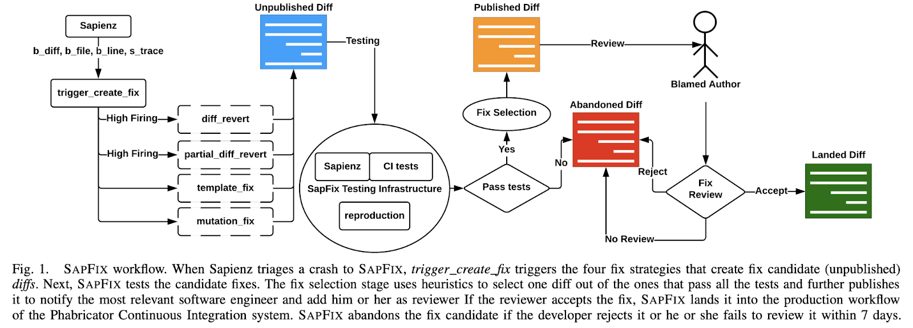

A common concern within the Computational Science (CS) community is that computational scientists are not trained in Software Engineering (SE) and hence might create less-than-good software. This concern is unfounded.
Ideas


- Idea: Predict next month’s work due to issues, bugs and enhancement requests.
- Value: Increase effectiveness of planning and staff allocation. Improve project estimates.

A friend who tells you where this question has been answered before
- Idea: Automatically triage mailing list questions and support requests using prior responses.
- Value: Reduce support efforts. Improve user experience and community engagement.
- Idea: Automatically identify best reviewer for a peer review.
- Value: Optimize reviewer selection. Speed up the development cycle with fast feedback.


- Idea: Minimize time to failure for PRs by reordering test cases dynamically.
- Value: Speed up the development cycle with fast feedback. Find new issues faster.
- Idea: Jump-start new users with tailored code completion recommendations.
- Value: Onboard new users quickly and make their first steps the right ones.
Current projects
We collected basic measures for over 100 projects and test case / build time metrics on over 50.

- Red: Standard Empirical SE (perform badly on Compute.Sci. projects)
- Green: After we made it better

- Idea: Identify effective and ineffective contributors. When to reject patches from “untrusty” sources?
- Value: Focus energy on top contributors. Automatically assign review tasks to best hero available. Identify contributors that need additional skills development.

- Idea: Characterize your API surface with regards to usage from the community. Find low/high areas of usage and common usage patterns.
- Value: Prioritize engineering effort based on actual API usage. Identify areas for new examples and documentation. Receive indirect feedback on API design.
- Idea: Automatically propose bug fixes and other changes.
- Value: Reduce developer effort to fix bugs.
